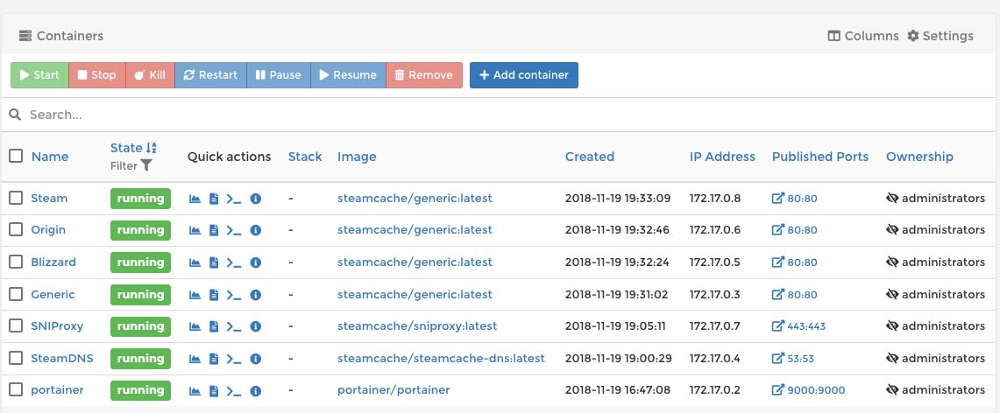
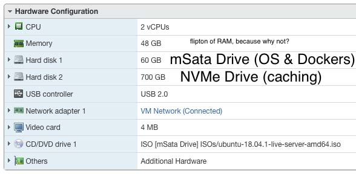
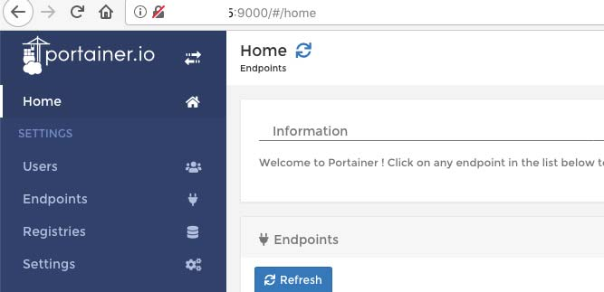
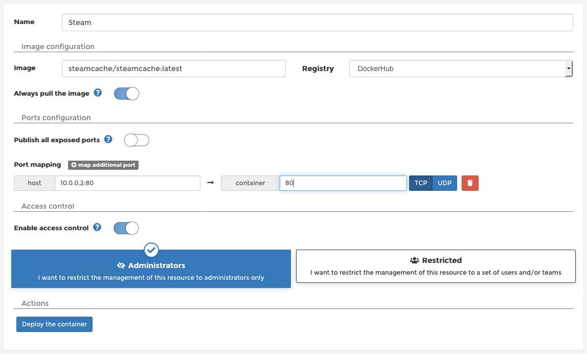
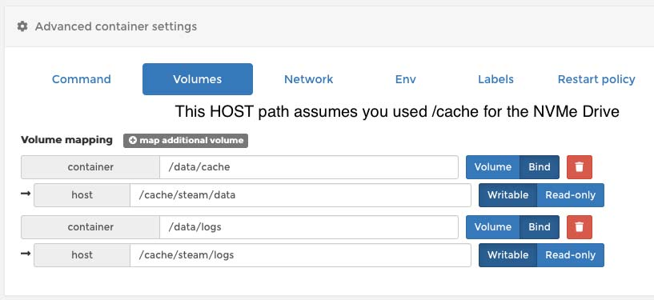
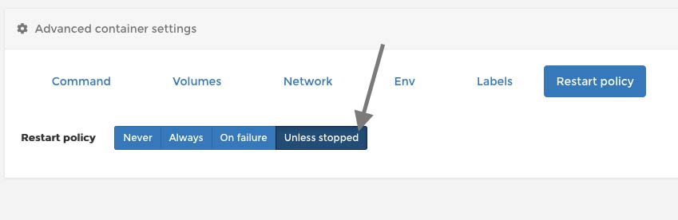
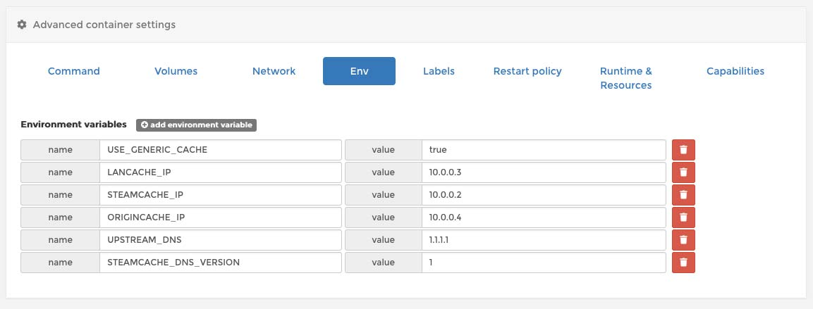

Blog: An easier SaltLAN
description: My family does an annual LAN Party and one of the biggest complaints we have is that Steam takes ages to download for everyone.
date published: 2018-11-28 | date updated: 2018-11-28


My family does an annual LAN Party and one of the biggest complaints we have is that Steam takes ages to download for everyone.
This year things are going to be different. I want to follow in the footsteps of SaltLAN and setup some caching. As this progressed, I spiced things up with my own flare and thought I would share.
The primary guide I followed was: https://github.com/SaltLAN/Configuration/blob/master/SETUP.md done by @Pips801.
Step 1 - Get a Server
I have a server I use for various projects and environments. SuperMicro E300-8D You can read about a similar setup on a fellow 801Labs member's blog at: https://securedumby.science/view-post/dumbyland_beginning_
Step 2 - Install a VM
I am installing a Ubuntu 18.04 VM onto this server. The primary trick with the VM is that I setup 2 hard drives so that I can utilize the BLAZING FAST NVMe drive I have in this server for the caching. After this LAN party, I'm going to delete/shrink the cache drive since it won't be needed later and I want to keep the NVMe space available for other projects. I'll keep the OS & Dockers on the mSata drive, powered off, for future use.

Follow the normal Ubuntu install setup.
Update Ubuntu:
sudo apt update
sudo apt dist-upgrade -y
sudo reboot
Enable SSH:
sudo systemctl enable ssh
sudo systemcts start ssh
Step 3 - Setup Docker
This should be pretty easy. Follow the official instructions: https://docs.docker.com/install/linux/docker-ce/ubuntu/
Step 4 - Install Portainer.io
Follow the official instructions: https://portainer.io/install.html
I deviated from the official Portainer guide by not creating a portainer data container, and rather mounting to the filesystem. I did this so I can backup the settings easily.
sudo mkdir /opt/appdata/
docker run -d -p 9000:9000 -v /var/run/docker.sock:/var/run/docker.sock -v /opt/appdata/portainer:/data --restart unless-stopped --name portainer portainer/portainer

Bam! Now you should be able to access Portainer
Step 5 - Format & Automount Cache Drive
I followed this guide to format my 700GBs of NVMe storage for cache https://www.digitalocean.com/community/tutorials/how-to-partition-and-format-storage-devices-in-linux
sudo parted /dev/sdb mklabel gpt
sudo parted -a opt /dev/sdb mkpart primary ext4 0% 100%
sudo mkfs.ext4 -L cache /dev/sdb1
Don't forget to add the drive to /etc/fstab so that it will auto-mount. I have
mine mounting to /cache in the root of the system.
Step 5 - Setup Network for Containers
We want to give each container a unique IP address on the network, so we need to create a unique IP address for each container so that can happen.
Since Ubuntu 18.04 uses netplan instead of /etc/network/interfaces , let's try
that out.
Create a lanparty.yaml file with your IPs.
network:
ethernets:
ens160:
addresses:
[10.0.0.2/24, 10.42.0.3/24, 10.42.0.4/24, 10.42.0.5/24]
gateway4: 10.0.0.1
nameservers:
addresses:
- 10.0.0.1
version: 2
Then you'll need to restart netplan for the new IPs: sudo netplan apply
Step 6 - Install the Various Containers
We're going to create a container for each service we want to cache. SaltLAN
shows this is what it would look like if we were to create the commands
manually:
ServiceCommandSteamsudo docker run --name steam-cache -p 10.0.0.2:80:80 -d steamcache/steamcacheBattle.netsudo docker run --name blizzard-cache -p 10.0.0.3:80:80 -d steamcache/genericOriginsudo docker run --name origin-cache -p 10.0.0.4:80:80 -d steamcache/genericUplaysudo docker run --name uplay-cache -p 10.0.0.5:80:80 -d steamcache/genericRiotsudo docker run --name riot-cache -p 10.0.0.6:80:80 -d steamcache/genericFrontiersudo docker run --name frontier-cache -p 10.0.0.7:80:80 -d steamcache/genericWindowssudo docker run --name windows-cache -p 10.0.0.8:80:80 -d steamcache/genericTwitchsudo docker run --name twitch-cache -p 10.0.0.9:80:80 -d steamcache/twitch
Again, since we're going to put our own twist on it, these will be different.
Specifically we're going to add a mountpath inside the container to point to our
NVMe drive AND we're going to do it all using Portainer's GUI.
Containers -> + Add Container
Then fill in the Settings. I'll show screenshots for a Steam Cache:



Once all those are done, you can go ahead and deploy the container.
Create containers for each of the different services.
You'll want to read the
steamcache/generic guide. If you're
using SNIProxy or SteamDNS (you should use both), you'll set the port mapping
just to something like 443:443, without any IPs. That'll make it so that it is
mapped to all IPs.
Also, There are environmental variables you need to set to configure things for your environment.
The only one I'll show is the SteamDNS env variables:

Beyond that, you can handle it. Here's what mine looked like completed:
Step 7 - Set your router DNS
This step is the last step before things start taking effect. You need to go to your router and change your DNS server to a local one. This was not as common a feature as I hoped it would be. This may require you to get a nice router and setup OpenWRT or something similar onto it to get that running. Good luck on this one.
Step 8 - Analytics & Maintenance
There are a lot of tools that you can setup for this. I didn't really care about it. All I did was tweak the script from SaltLAN and make it fit my environment. You can find that here.
Enjoy!
I hope you have enjoyed this guide. I had a lot of fun at my LAN Party and a lot of games were had!
The cache worked very well for use. We saved over 1TB of data transferred, which would have killed our Comcast Data Cap. We did run into issues where we were limited by the 1GBs cap and the Samba Share would only really push to one person at a time, so I'll look at ways of improving this.
In the future I hope to look at stuff such as Linux ZFS ARC and setting up 10G networking.
with ❤️️ -- bashNinja